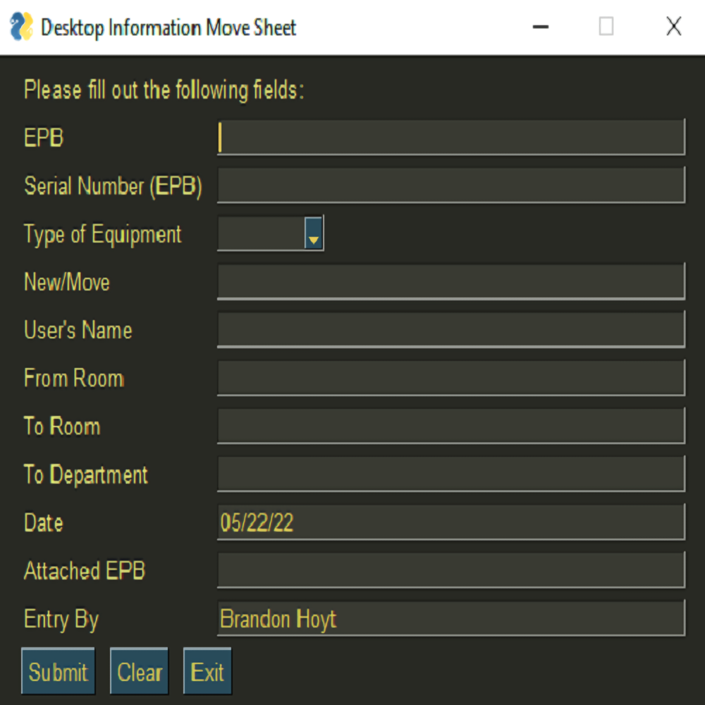

April, 2022
Utilizing Python libraries such as PySimpleGUI and openpyxl, I was able to create a simple data entry form that allows me to automate my workflow at Nashville Electric Service. In the form, I can input the Host Name (EPB) of the device, the serial number of the device (or the EPB again, if it was a computer), the type of equipment ("Desktop", "Laptop", "Printer", or "Monitor"), whether it was a "new" device or a previously-used device moving locations, etc., and have that data pushed directly to a team-wide Excel inventory sheet.

When the Submit button was pressed, the data would flow to whatever Excel sheet location defined in the code. I also added customizability of initial inputs to the mix - I made it so that I could keep the current date (that would be automatically generated upon execution of the program) and the "Entry By" field between submissions, and could edit the source code for whomever would want to utilize the program themselves. I coded those inputs to stay static, even if the "Submit" or "Clear" buttons were pressed; however, if someone else was responsible for the entry (and they were utilizing my source program, for any reason), the user can simply delete my name and place theirs.
Due to basic cybersecurity concerns of Python scripts- among other factors - the Excel sheet utilized by my team has never been linked to this Python script - however, I was able to still link it to an Excel sheet kept on my local machine and can copy and paste from there. Since I am expected to carry out at least two computer deployments per day at NES, with each deployment needing two full lines of data each, this little program still proves itself invaluable to my workflow in regard to time saved and benefits the overarching push toward a fully-streamlined computer deployment process.